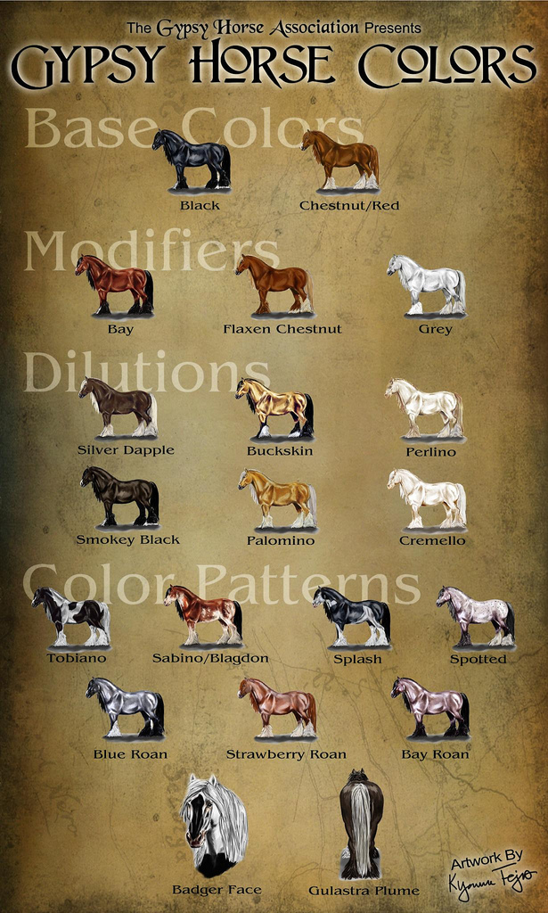
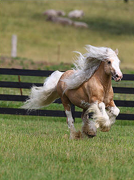

Traditionally a "cob" in the UK was a comparatively short-legged, sturdy type with an easy-going nature. Ideally, a small head, which probably brought about the saying that "A Cob should have the back end of a cook and the head of a lady". Fairly heavy boned and of medium height with obvious draft influence; even so he could pick up a good pace when in harness and was also very popular as a hunter/jump mount. The Gypsy Horse has been bred in a true cob mold but also with the unique qualities, as described above, for which the Romany folk bred.
The Gypsy Horse gains popularity with each new person he meets. He is an "all-around" horse - equally suitable for riding or driving, and is healthy, hardy, and strong. He is the answer for the average horse-loving family who longs for a horse that is easy to manage and keep, and who meets the needs of young and old alike. He has a warm, loveable nature which is active, kind, intelligent, and willing. According to description he had to be "fleet of foot, a good jumper, a good swimmer and able to carry a substantial weight on his back". He also had to be capable of drawing heavy loads of timber. Throughout the ages he has flourished and worked, often in poverty-stricken conditions. This was the sort of life that has shaped the Gypsy Horse what he is today.
After a long period of disregard and neglect, the Gypsy Horse has finally come back into his own. Time and time again, he continues to prove himself to be the ideal trekking animal with his safe, sure-footed responsiveness. He is unrivalled for private driving and is a natural jumper. In addition, he is perfect for the disabled rider who benefits from his tractable and gentle disposition. The Gypsy Horse is, beyond doubt, the most versatile of animals in existence and long ago established a reputation as the best ride and drive animal in the world.

*Information retrieved from Gypsy Horse Association
2009 14.3hh Palomino Splash Gypsy Vanner Stallion
Sired by Golden Chancelot (Flash of Gold) and
out of Juliets Inheritance (Romeo)
Stud Fee: $2,0000
